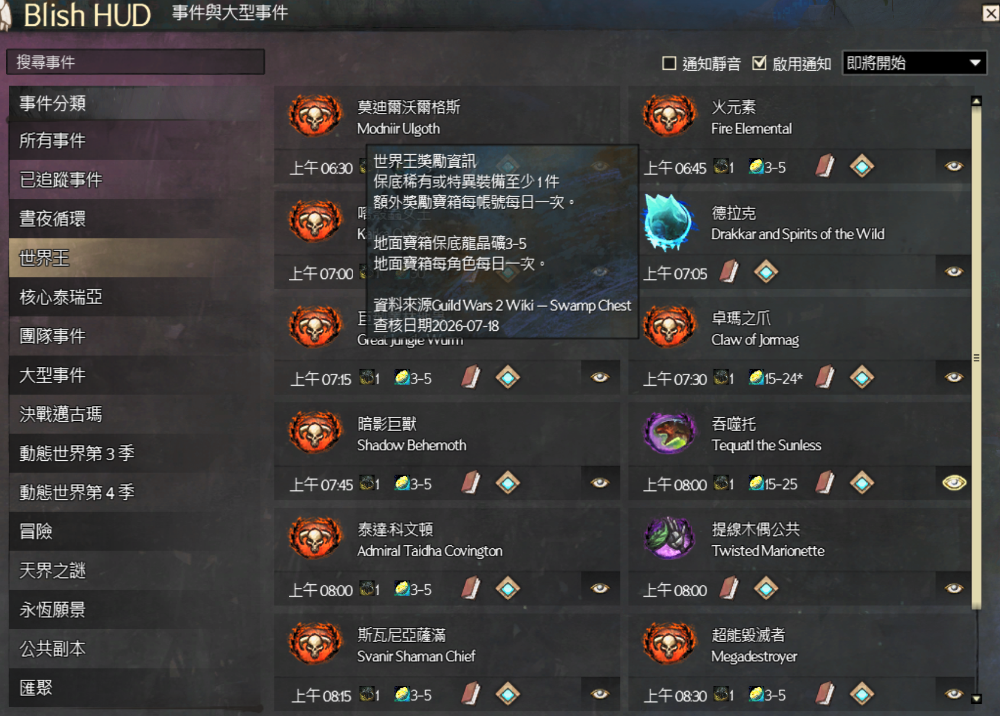
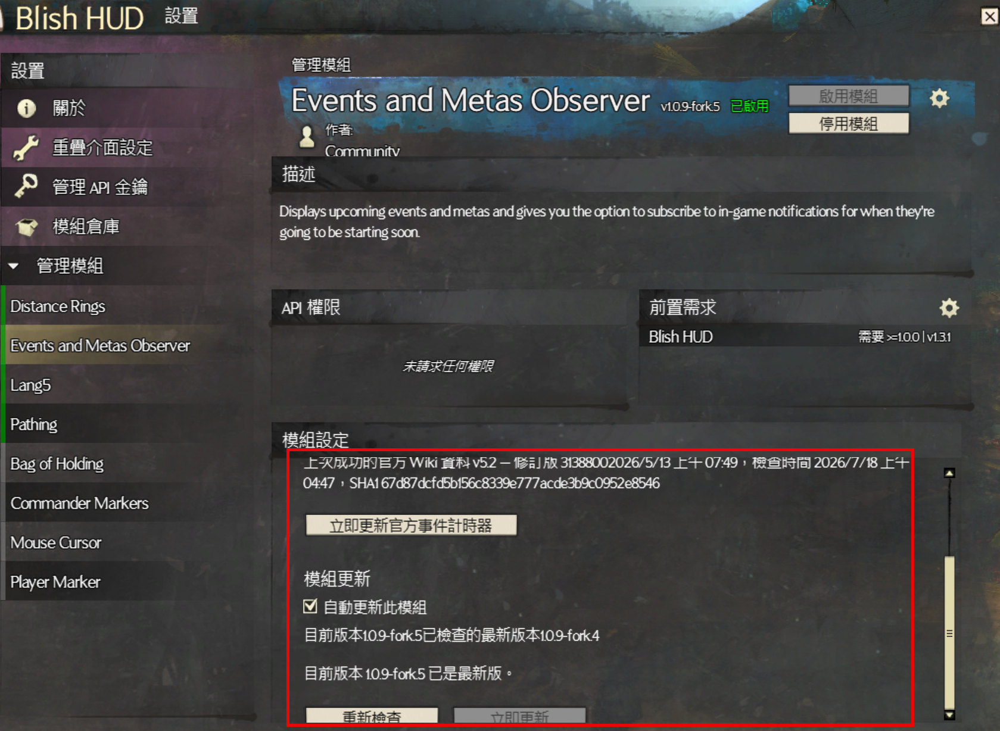
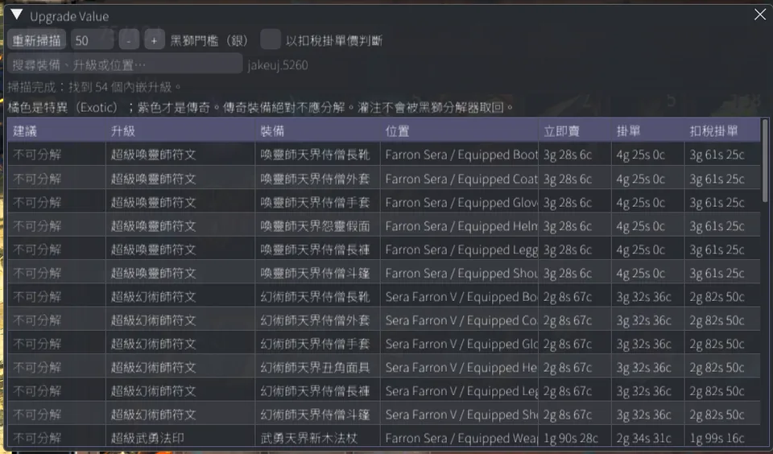

繁中＋官方英文
卡片以繁中為主、英文原名為輔；搜尋同時支援繁中、英文與既有別名。
Guild Wars 2 · Blish HUD Module
不只是翻譯。繁中與官方英文名稱、17 筆已查核事件獎勵、自訂聊天訊息、官方 Wiki 即時時程、離線備援與安全更新，都整理在同一個可靠的 Blish HUD 模組裡。
Windows · 需要支援中文的 Blish HUD 1.0.0 以上 · 免費開源

Engineering Case Study
每一層都有驗證、失敗策略與可追溯來源。網路或更新失敗時，使用者仍能繼續使用目前版本，而不是被錯誤資料或不完整檔案卡住。
優先順序：已驗證的官方即時資料 → last-known-good 官方快取 → BHM 內建資料。
任何檢查、下載或摘要驗證失敗，都保留原版本運作，不替換檔案也不要求重啟。
Fork Evolution · 2026
每一步都有對應的 Release 與原始碼，不用模糊的「最佳化」包裝成果。
Foundation
建立台灣繁中交付流程、fork 版號規則與自動產生後再清理的 Release notes。
Official Data
解析官方 Widget，保留成功快取與內建資料，讓時程、連結和傳送點有清楚權威來源。
Stable Identity
補齊原先缺少的事件映射，以穩定 ID 保護追蹤設定，並建立 PNG 與封裝驗證。
Player Context
繁中下保留官方英文原名，加入 13 隻核心世界王的保底獎勵、每日限制與 Wiki 來源。
Safe Delivery
只接受格式正確的穩定版、可信 GitHub 資產與摘要；成功安裝後才保留設定並重新啟動。
Player Communication
加入 4 個大型公共活動的已查核獎勵與自訂聊天訊息，並修復含冒號匯聚頁面的 Wiki 按鈕。
Built for Taiwan Players
畫面保留熟悉的 Blish HUD 操作，只把查資料、比對名稱與判斷獎勵的成本降下來。
卡片以繁中為主、英文原名為輔；搜尋同時支援繁中、英文與既有別名。
涵蓋 13 隻核心世界王與 4 個大型公共活動，標示保底裝備、龍晶礦、固定金幣與每日限制。
官方資料成功才更新；無法連線時依序使用成功快取與內建資料。
以安全模板組合傳送點、雙語事件、分類、時間與已查核獎勵；格式失效時自動退回原始座標。
fork.5+ · Verified Update
每次載入在背景檢查最新穩定版。Release tag、資產名稱、可信網址與 SHA-256 全部通過後才會安裝；任何失敗都繼續使用原版本。
關閉後仍會通知新版，只有按「立即更新」才安裝。
測試版、預發行版、格式錯誤與降版都會拒絕。
保留模組啟用狀態，下載或驗證失敗時不動目前檔案。
fork.5 已能安全自動更新到 fork.6；更舊版本手動安裝 fork.6 一次後，後續合規穩定版即可自動跟上。

First Install · Four Steps
使用支援中文且版本 1.0.0 以上的 Blish HUD。
從最新 Release 取得 Events.Module.bhm。
完全關閉 Blish HUD 後，將檔案放入模組資料夾。
啟用 Events and Metas Observer；自動更新預設開啟。
模組路徑Documents\Guild Wars 2\addons\blishhud\Modules
jakeuj · GW2 Tool Suite
Blish HUD、Nexus 與 ArcDPS 各自處理不同問題，但都以繁中玩家看得懂、能驗證、可安全更新為目標。

Stable Release
新增自訂聊天訊息、17 筆已查核獎勵，並修復兩個匯聚事件的 Wiki 按鈕。